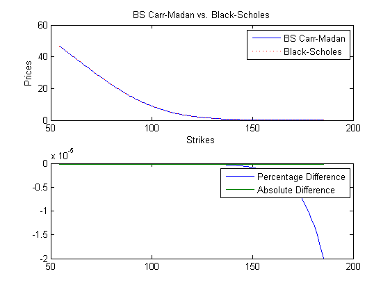
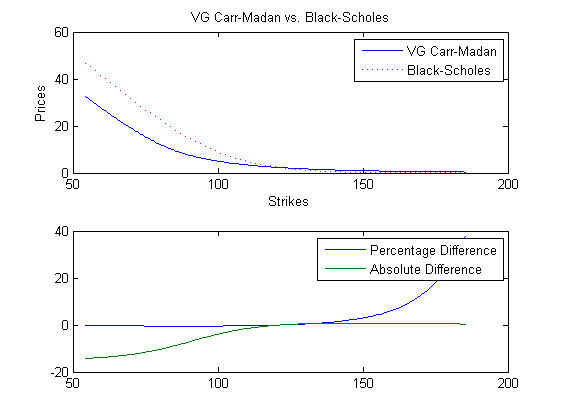
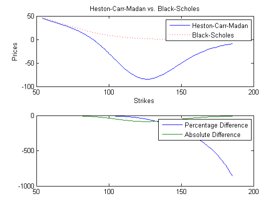

FFT pricing algorithm using Carr-Madan formulae
Contents
Vanilla black-scholes
Price, Strike, Rate, Time, Volatility, Yield)
blsprice(100,100,0.02,1,0.2,0)
ans =
8.9160
Black-Scholes (BS)
parameters
p = [100,0.02,0,0.2,1]; % characteristic fn rnfftcf(0,p,'bs') rnfftcf(i,p,'bs') % 1.0000 0.8955 + 0.4442i 0.6040 + 0.7950i rnfftcf([0 0.1 0.2],[100,0.02,0,0.2,2],'bs'); % price using Carr-Madan [ecp,eck]=fftcfprc(p,'bs'); % get the right strikes k = exp(eck(2700:2900)); c = ecp(2700:2900); % plot the strikes of interest subplot(2,1,1); plot(k,c); xlabel('Strikes'); ylabel('Prices'); title('BS Carr-Madan vs. Black-Scholes'); % price ATM % grid variables n = 4096; a = 1.5; e = 0.25; % [ecp,eck]=fftcfprc(p,'bs',n,a,e); % compare to BS bsc = blsprice(100,k,0.02,1,0.2,0); h=line(k,bsc); set(h,'Color','r','LineStyle',':'); legend('BS Carr-Madan','Black-Scholes'); subplot(2,1,2); plot(k,[(c-bsc)./bsc; c-bsc]); legend('Percentage Difference','Absolute Difference');
ans =
1
ans =
0.0102
 VG (Variance Gamma)
parameters
p = [100,0.02,0,0.2,1,1,5,5]; % characteristic fn rnfftcf(0,p,'vg') rnfftcf(i,p,'vg') % price using Carr-Madan [ecp,eck]=fftcfprc(p,'vg'); % get the right strikes k = exp(eck(2700:2900)); c = ecp(2700:2900); % plot the strikes of interest subplot(2,1,1); plot(k,c); xlabel('Strikes'); ylabel('Prices'); title('VG Carr-Madan vs. Black-Scholes'); % price ATM % grid variables n = 4096; a = 1.5; e = 0.25; % [ecp,eck]=fftcfprc(p,'bs',n,a,e); % compare to BS bsc = blsprice(100,k,0.02,1,0.2,0); h=line(k,bsc); set(h,'Color','r','LineStyle',':'); legend('VG Carr-Madan','Black-Scholes'); subplot(2,1,2); plot(k,[(c-bsc)./bsc; c-bsc]); legend('Percentage Difference','Absolute Difference');
ans =
1
ans =
0.0125
 HESTON (heston stochastic vol)
parameters
p = [100,0.02,0,0.2,1,1.5,0.18,0.6,-0.5]; % characteristic fn rnfftcf(0,p,'hest') rnfftcf(i,p,'hest') % price using Carr-Madan [ecp,eck]=fftcfprc(p,'hest'); % get the right strikes k = exp(eck(2700:2900)); c = ecp(2700:2900); % plot the strikes of interest subplot(2,1,1); plot(k,c); xlabel('Strikes'); ylabel('Prices'); title('Heston-Carr-Madan vs. Black-Scholes'); % price ATM % grid variables n = 4096; a = 1.5; e = 0.25; % [ecp,eck]=fftcfprc(p,'bs',n,a,e); % compare to BS bsc = blsprice(100,k,0.02,1,0.2,0); h=line(k,bsc); set(h,'Color','r','LineStyle',':'); legend('Heston-Carr-Madan','Black-Scholes'); subplot(2,1,2); plot(k,[(c-bsc)./bsc; c-bsc]); legend('Percentage Difference','Absolute Difference');
ans =
1
ans =
0.0034
 VGMC (variance gamma mean correcting)
fftcfprc(u,p,'vgmc');
Error using ==> evalin Undefined function or variable 'u'.
BSGA (black scholes with gamma vol)
fftcfprc(u,p,'bsga');
HESTON+ (Heston with jumps)
fftcfpc(u,p,'hestp');